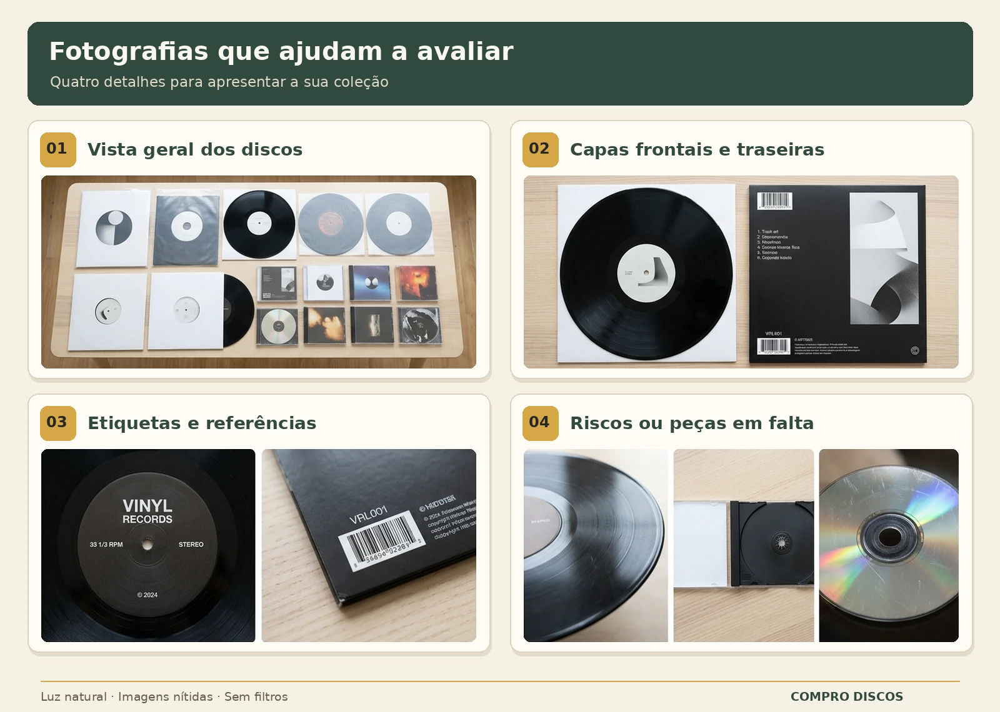

Discos de vinil
LPs, singles e EPs. Fotografe as capas e etiquetas.

Entre em contacto para combinarmos uma avaliação. Desloco-me na região de Lisboa, incluindo Cascais, Parede, Carcavelos e Oeiras. Outros locais a combinar.

Tenho interesse em discos de vinil e CDs de todos os géneros musicais. Após verificar o estado dos discos e chegarmos a acordo, a compra e o pagamento podem ser concluídos na hora.
Compro discos de vinil e CDs para coleção pessoal
Os seus discos.Novas histórias.A mesma paixão.
Compro discos de vinil e CDs exclusivamente para a minha coleção pessoal. Envie fotografias e conte-me o que tem guardado.

Compro Discosde Vinil e CDs
Colecionador particular · Avaliação justa e rápida

Sou Paulo Morais, colecionador de vinil e CDs há mais de 30 anos. Gosto do ritual de escolher um álbum, descobrir uma capa e voltar a ouvir uma música que ficou na memória.
Conheça a minha história ↗LPs, singles e EPs. Fotografe as capas e etiquetas.
Indique artistas, títulos e o estado das caixas e livretos.
Envie uma vista geral e a quantidade aproximada.
Colecionador particular · Paulo Morais


Simples, direto e pessoal
Envie fotografias e indique a quantidade e localidade.
Se houver interesse para a coleção, falamos sobre uma possível proposta.
Confirmamos preço, pagamento e entrega antes do envio.
Não para iniciar a conversa. Comece com uma vista geral e algumas capas legíveis.
Sim. Pode apresentar vinil, CDs ou ambos, indicando os títulos e o estado.
Sim. O formulário de e-mail aceita até cinco imagens JPG, PNG ou WebP, com 10 MB no total. No WhatsApp, adicione-as dentro da conversa.
Tem discos de vinil ou CDs que já não ouve? Sou Paulo Morais e compro discos para a minha coleção pessoal. Pode apresentar uma coleção ou os discos que pretende vender, indicando a quantidade aproximada, o estado e a localidade.
Pode contactar-me a partir de Cascais, Parede, Carcavelos, Oeiras ou de outra localidade da Grande Lisboa. A deslocação e as condições de uma eventual compra são combinadas diretamente, após uma primeira avaliação. Não se trata de uma loja com atendimento ao público.
Colecionador particular · Paulo Morais
Escolha e-mail ou WhatsApp. O pedido não obriga a vender nem garante uma compra.